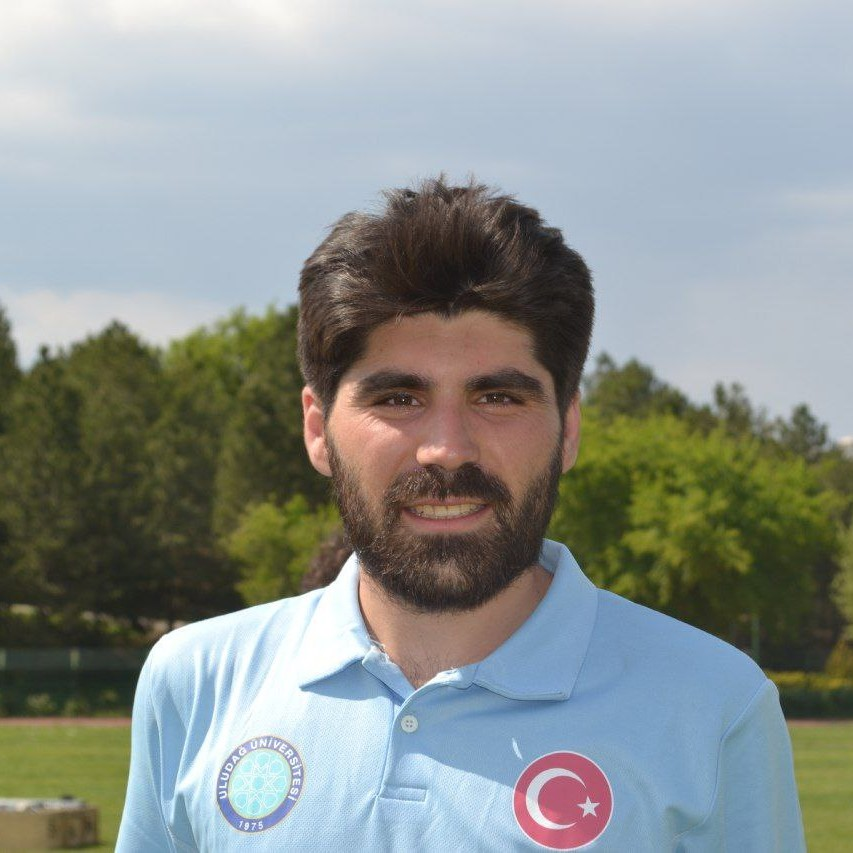

Fatih Uyanık
Elektrik-Elektronik Mühendisi
Merhaba ben Fatih Uyanık. Uludağ Üniversitesi Elektrik-Elektronik Mühendisliğinden mezun oldum.
Python, java ve html-css-javascript programlama dillerini biliyorum. Veri bilimi, makine öğrenmesi ve yapay zeka alanlarıyla ilgileniyorum.
CV İndir